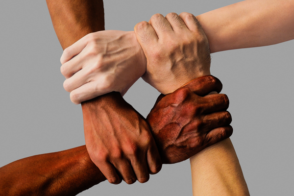

Economics and societyNew World Order |
CONTENTS
|
Economics and societyNew World OrderThe New World Order theory states that a group of international elites controls governments, industry, and media organizations, with the goal of establishing global hegemony. They are alleged to be implicated in most of the major wars of the last two centuries, to carry out secretly staged events, and to deliberately manipulate economies. Organizations alleged to be part of the plot include the Federal Reserve System, the Council on Foreign Relations, Trilateral Commission, the Bilderberg Group, the European Union, the United Nations, the World Bank, the International Monetary Fund, Bohemian Grove, Le Cercle and Yale University society Skull and Bones. |
Denver AirportSome theorists believe that Denver International Airport stands above an underground city which serves as a headquarters of the New World Order. Theorists cite the airport's unusually large size, its distance from Denver city center, as well as assorted alleged Masonic or Satanic symbols, and a set of murals which include depictions of war and death. |
George SorosHungarian-American investor George Soros has been the subject of conspiracy theories since the 1990s. Soros has used his wealth to promote various political, social, educational and scientific causes, grants totaling an estimated $11 billion up to 2016. However, theories tend to assert that Soros is in control of a large portion of the world's wealth and governments, and that he secretly funds a large range of persons and organizations for nefarious purposes, such as Antifa, which the conspiracies allege to be a single far-left militant group. Such ideas have been promoted by Donald Trump, Bill O'Reilly, Roy Moore, Alex Jones, Arizona Congressman Paul Gosar, Breitbart News and cartoonist Ben Garrison. Soros conspiracy theories are sometimes linked to antisemitic conspiracy theories. |
FreemasonryConspiracy theories concerning the Freemasons have proliferated since the 18th century. Theorists have alleged that Freemasons control large parts of the economies or judiciaries of a number of countries, and have alleged Masonic involvement in events surrounding the sinking of the Titanic and the crimes of Jack the Ripper. Notable among theorists has been American inventor Samuel Morse, who in 1835 published a book of his own conspiracy theories. Freemason conspiracy theories have also been linked to certain antisemitic conspiracy theories. |
Üst akılConspiracy theories in Turkey started to dominate public discourse during the late reign of the Justice and Development Party and Recep Tayyip Erdoğan. In 2014, Erdoğan coined the term üst akıl ("mastermind") to denote the alleged command and control institution, somewhat ambiguously placed with the government of the United States, in a comprehensive conspiracy to weaken or even dismember Turkey, by orchestrating every political actor and action perceived hostile by Turkey. Erdoğan as well as the Daily Sabah have on multiple occasions alleged that very different non-state actors—like the Salafi jihadist Islamic State of Iraq and the Levant (ISIL), the libertarian socialist Kurdistan Workers' Party (PKK) and supporters of Fethullah Gülen—were attacking Turkey at the same time in a well-coordinated campaign.
|
Anti-CatholicismAnti-Catholic cartoon depicting Catholicism as an octopus, from H. E. Fowler and Jeremiah J. Crowley's The Pope (1913).
|
AntichristApocalyptic prophecies, particularly Christian claims about the End Times, have inspired a range of conspiracy theories. Many of these cite the Antichrist, a leader who will supposedly create an oppressive world empire. Countless figures have been called Antichrist, including Holy Roman Emperor Frederick II, Russian emperor Peter the Great, Saladin, Pope John XXII, Benito Mussolini, American President Barack Obama, French Emperor Napoleon Bonaparte, and German Dictator Adolf Hitler. |
Bible and Jesus |
Islam
"War against Islam" is a conspiracy theory in Islamist discourse which describes an alleged plot to either harm or annihilate the social system within Islam. The perpetrators of this conspiracy are alleged to be non-Muslims and "false Muslims", allegedly in collusion with political actors in the Western world. The "War against Islam" theory is often used in order to refer to modern social problems and changes, but the Crusades are often seen as its starting point.
Since the September 11 Attacks, many anti-Islamic conspiracy theories have emerged, concerning a variety of topics. Love Jihad, also called Romeo Jihad, refers to a conspiracy theory concerning Muslim males who are said to target non-Muslim girls for conversion to Islam by feigning love. The "Eurabia" theory alleges a massive Muslim plot to islamize Europe (and often the rest of the western world) through mass immigration and high birth rates. In addition, before and during his presidency, US President Barack Obama was accused by opponents of secretly being a Muslim.
|
RacismIn the United States, black genocide conspiracy theory holds the view that African Americans are the victims of genocide instituted by white Americans. Lynchings and racial discrimination were formally described as genocide by the Civil Rights Congress in 1951. Malcolm X also talked about "black genocide" in the early 1960s. Public funding of the Pill was also described as "black genocide" at the first Black Power Conference, in 1967. In 1970, after abortion was more widely legalized, some black militants depicted abortion as being part of the conspiracy.
|
Government, politics and conflictIn the modern era, political conspiracy theories are often spread using fake news on social media. A 2017 study of fake news published by the Shorenstein Center found that "misinformation is currently predominantly a pathology of the right". |
Illuminati |
9/11 |
Sandy Hook
A 2012 fatal mass shooting at Sandy Hook Elementary School in Newtown, Connecticut, prompted numerous conspiracy theories, among which is the claim that it was a manufactured event with the aim of promoting gun control. Former Ku Klux Klan leader David Duke has theorized that 'Zionists' were responsible. Theorists such as Alex Jones have suggested that the event was staged with actors. Harassment of the bereaved families by conspiracy theorists has resulted in a number of prosecutions. Rush Limbaugh also stated that the event happened because the Mayan Calendar phenomenon made shooter Adam Lanza do it.
|
Barack ObamaDonald Trump has been a proponent of the conspiracy theory that Barack Obama was not born in the United States
|